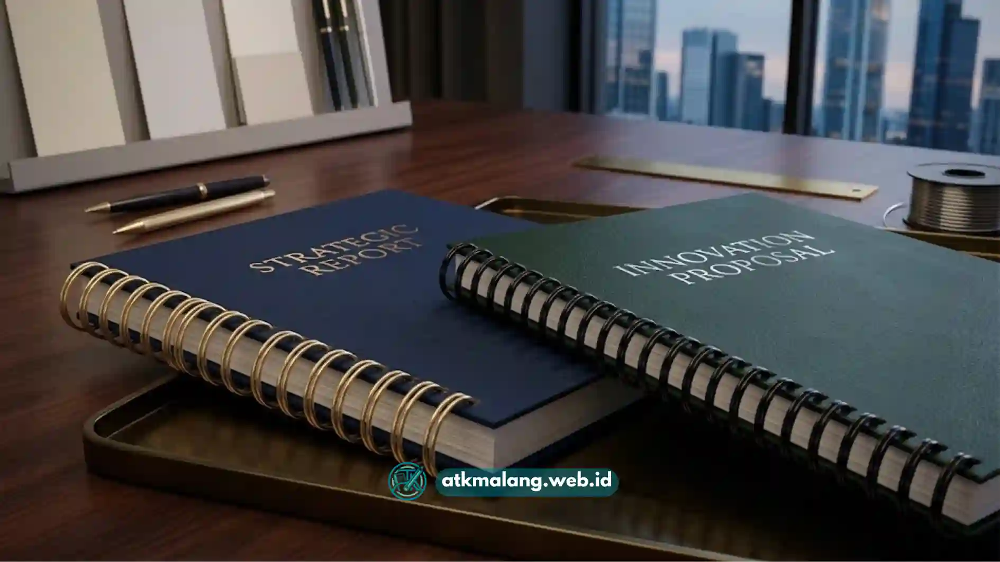

Mesin jilid spiral plastik bekerja dengan melubangi tepi kertas, lalu memasukkan ring plastik berulir ke lubang tersebut hingga membentuk jilidan yang bisa dibuka rata 360 derajat. Prosesnya melalui dua tahap utama: pelubangan dan pemasangan ring.
- Mesin jilid spiral plastik terdiri dari dua unit fungsi: pelubang kertas (punch) dan pemutar ring (binding).
- Ring plastik tersedia dalam berbagai diameter sesuai ketebalan dokumen.
- Hasil jilidan bisa dibuka rata sehingga cocok untuk laporan, proposal, dan buku panduan.
- Berbeda dengan spiral kawat yang lebih kaku dan tahan lama, spiral plastik lebih fleksibel dan mudah dibongkar pasang.
- Pemilihan mesin bergantung pada volume kerja, jenis dokumen, dan anggaran.
Daftar Isi
- Apa Itu Mesin Jilid Spiral Plastik?
- Bagaimana Tahapan Kerja Mesin Jilid Spiral Plastik?
- Apa Perbedaan Jilid Spiral Kawat dan Plastik?
- Dokumen Apa Saja yang Cocok Dijilid dengan Spiral Plastik?
- Apa Kelebihan dan Kekurangan Mesin Jilid Spiral Plastik?
- Apa Saja Kesalahan Umum Saat Menggunakan Mesin Jilid Spiral Plastik?
- Tips Memilih Mesin Jilid Spiral Plastik yang Tepat
Apa Itu Mesin Jilid Spiral Plastik?
Mesin jilid spiral plastik adalah alat yang digunakan untuk menjilid kumpulan kertas menggunakan ring plastik berbentuk sisir atau spiral yang dimasukkan melalui lubang-lubang di tepi kertas.
Alat ini umum digunakan di percetakan, kantor, sekolah, dan usaha fotokopi karena prosesnya relatif cepat dan tidak memerlukan lem atau jahitan.
Mesin ini cocok untuk siapa saja yang perlu menjilid dokumen dalam jumlah kecil hingga menengah secara mandiri, tanpa harus mengirim ke percetakan besar.
Mesin jilid spiral plastik penting karena memberikan hasil jilidan yang rapi, profesional, dan dapat dibuka rata, sehingga dokumen kerja harian seperti laporan atau proposal lebih nyaman dibaca dan difotokopi ulang bila diperlukan.
Bagaimana Tahapan Kerja Mesin Jilid Spiral Plastik?
Mesin ini bekerja melalui tiga tahap berurutan: menyusun kertas, melubangi tepi kertas, dan memasukkan ring plastik ke lubang tersebut.
Tahap 1, Menyusun dan Meratakan Kertas
Sebelum dilubangi, lembaran kertas disusun rapi termasuk sampul depan dan belakang, kemudian diratakan agar posisi lubang nantinya sejajar.
Tahap 2, Pelubangan Kertas (Punching)
Tumpukan kertas dimasukkan ke bagian pelubang mesin. Dengan menekan tuas atau tombol, mata pisau kecil akan membuat serangkaian lubang persegi atau oval di sepanjang tepi kertas. Jumlah lubang bergantung pada jenis mesin dan ukuran kertas.
Tahap 3, Pemasangan Ring Plastik
Ring plastik berbentuk spiral dibuka menggunakan mekanisme pemutar pada mesin, kemudian lubang-lubang kertas dimasukkan ke ring tersebut satu per satu. Setelah semua lembar terpasang, ring ditutup kembali sehingga membentuk jilidan yang utuh.
Apa Perbedaan Jilid Spiral Kawat dan Plastik?
Perbedaan utama jilid spiral kawat dan plastik terletak pada bahan ring, fleksibilitas, ketahanan, dan kemudahan pembongkaran dokumen setelah dijilid.
| Aspek | Spiral Kawat | Spiral Plastik |
|---|---|---|
| Bahan | Logam berlapis | Plastik PVC |
| Ketahanan | Lebih tahan lama dan kokoh | Cukup tahan, tapi bisa retak jika ditekuk berlebihan |
| Fleksibilitas | Kaku, sulit dibongkar pasang | Mudah dibuka dan dipasang ulang |
| Tampilan | Terkesan lebih formal dan premium | Tersedia banyak warna, terkesan lebih kasual |
| Biaya | Umumnya lebih mahal | Umumnya lebih terjangkau |
| Penggunaan umum | Buku manual, katalog, dokumen resmi | Laporan tugas, proposal, dokumen kerja harian |
Secara umum, spiral kawat lebih dipilih untuk dokumen yang perlu tampil formal dan tahan lama, sedangkan spiral plastik lebih fleksibel untuk kebutuhan dokumen yang sering direvisi atau ditambah halaman.

Perbandingan antara jilid spiral kawat dan plastik.Dokumen Apa Saja yang Cocok Dijilid dengan Spiral Plastik?
Dokumen yang cocok dijilid dengan spiral plastik adalah dokumen yang perlu dibuka rata, sering direvisi, atau dicetak dalam jumlah menengah seperti laporan, proposal, skripsi draft, dan modul pelatihan.
- Laporan kerja praktik dan laporan magang
- Proposal bisnis dan proposal kegiatan
- Modul pelatihan atau buku panduan internal
- Draft skripsi atau tesis sebelum jilid hardcover
- Materi presentasi flipchart
Apa Kelebihan dan Kekurangan Mesin Jilid Spiral Plastik?
Kelebihan utamanya adalah kemudahan penggunaan dan biaya operasional yang relatif rendah, sementara kekurangannya adalah daya tahan ring yang terbatas dibanding logam.
Kelebihan:
- Proses jilid cepat tanpa lem atau alat tambahan.
- Ring tersedia dalam berbagai warna dan ukuran.
- Dokumen bisa dibuka rata 360 derajat.
- Mudah dibongkar jika perlu menambah atau mengurangi halaman.
Kekurangan:
- Ring plastik dapat retak jika sering dilipat tajam atau terkena suhu panas.
- Kurang cocok untuk dokumen yang butuh kesan sangat formal atau mewah.
- Umur pakai umumnya lebih pendek dibanding spiral kawat.
Apa Saja Kesalahan Umum Saat Menggunakan Mesin Jilid Spiral Plastik?
Kesalahan umum meliputi memilih ukuran ring yang tidak sesuai ketebalan dokumen dan tidak meratakan kertas sebelum dilubangi.
- Memilih diameter ring terlalu kecil sehingga ring sulit ditutup atau kertas mudah lepas.
- Tidak meratakan tepi kertas sebelum pelubangan, sehingga lubang tidak sejajar.
- Melubangi terlalu banyak lembar sekaligus melebihi kapasitas mesin, yang bisa membuat lubang tidak rapi.
- Menutup ring terlalu cepat sehingga ada halaman yang belum sepenuhnya masuk.
Tips Memilih Mesin Jilid Spiral Plastik yang Tepat
Pemilihan mesin sebaiknya disesuaikan dengan volume dokumen harian, jenis kertas yang biasa dijilid, dan anggaran yang tersedia.
- Pertimbangkan kapasitas pelubangan sekali tekan sesuai kebutuhan harian.
- Perhatikan jenis mesin: manual untuk skala kecil, elektrik untuk skala usaha percetakan.
- Sesuaikan ukuran ring yang didukung mesin dengan ketebalan dokumen yang biasa dijilid.
- Pastikan ketersediaan spare part dan ring plastik pengganti mudah didapat.
Mesin jilid spiral plastik bekerja dengan melubangi kertas lalu memasukkan ring plastik melalui mekanisme pemutar, menghasilkan jilidan yang fleksibel dan mudah dibuka rata.
Dibanding spiral kawat, spiral plastik lebih ekonomis dan mudah dibongkar pasang, meski daya tahannya relatif lebih terbatas. Pemilihan jenis jilid sebaiknya disesuaikan dengan kebutuhan tampilan, frekuensi revisi dokumen, dan anggaran yang tersedia.
Untuk pembahasan lebih lanjut, lihat juga artikel tentang Alat Tulis Kantor dan panduan mencari layanan jilid spiral di Malang.